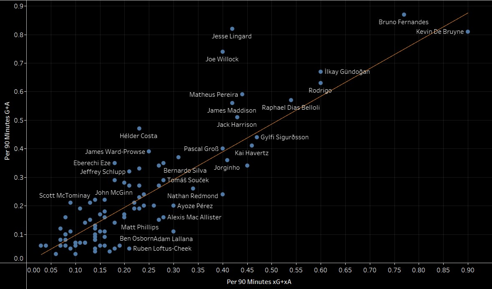

Premier League Midfielders' Performance Review 2020-21
Made a graph showing how the midfielders in the Premier League performed as per their expected performances. The graph has been plotted for goals+assists (G+A) versus the expected goals+assists (xG+xA) for the 2020-21 season.
All the players on the orange line did as per their expectations. Players above the line have overperformed and below the line have underperformed.
While both Bruno Fernandes and Kevin De Bruyne performed excellently, Fernandes' G+A of 0.87 was better than his xG+xA of 0.77. De Bruyne's G+A of 0.81 was lower than his xG+xA of 0.90.
The biggest surprise was Jesse Lingard who outperformed his xG+xA of 0.42 with G+A of 0.82 with his improved form in the second half of the season while playing for West Ham.
All these stats have been modified per 90, so there is an equality maintained and players who played for at least 900 minutes have been considered. The stats have been taken from StatsBomb via Fbref.com.